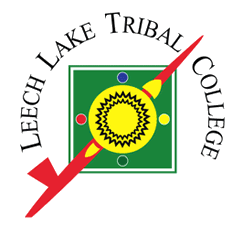
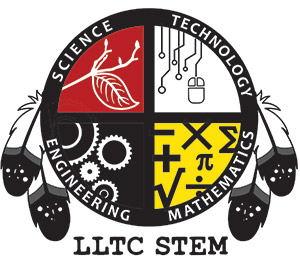

|  |
Introduction to Programming ITECH 210.1 T Th 3-4:20 |
 |
Instructor: Eric Kuha
eric.kuha@lltc.edu
218-335-4257

Need Help?

Text: Lambert. Fundamentals of Python: First Programs ISBN: 9781111822705
Other Required Materials: Raspberry Pi Computer Kit with Raspbian Linux and Python 3 installed. This will be supplied to the student at no cost. Also, a GitHub account will be required for submitting homework. Instructions and tutorials will be covered very early in the term.
Other Suggested Materials: A USB flash drive or cloud storage (e.g. Dropbox, OneDrive, or Google Drive) for keeping backups of all work. Student work will also be stored on GitHub as this will be the primary class location.
Course Fulfillment:This course will fulfill elective credits for the Liberal Education STEM Emphasis AA program.
Prerequisite: MATH 150, ITECH 150, or instructor approval.
Course Description: This course is an introduction to programming (algorithmic problem solving). We will cover algorithm development in an abstract way and then we will use the Python 3 programming language and a version of the Linux operating system called Debian. This class will cover various topics, including object-oriented, functional, and interactive programming. Students will gain experience designing, writing, and debugging simple programs.
Course Objectives:What to expect: Generally, classes will consist of a combination of instruction and "lab" time. If enrollment is high enough, students will work in pairs using a system called "pair programming." Otherwise, we will do a combination of "class programming" and solo work..
Attendance: As you are no doubt aware, attendance is absolutely critical to success everywhere. Sometimes the text will be missing steps or procedures or other material (there are actually some deprecated methods in the text!). I will even be deviating from the text periodically to address wider issues and demonstrate newer technologies and methods of interacting with today's technological world. Thus, attendance is not only highly advised, but, in fact, mandatory. I think it's also important to address the issue of tardiness. I start class immediately at the designated time. So please do try to be in class on time. Sometimes it takes several minutes to set up the Raspberry Pi, and if you are late, that can derail the plans for the day.
Disabilities Act: In compliance with the American Disabilities Act, Leech Lake Tribal College will make every effort to provide equal access for persons with disabilities. If you need any accommodation due to disability, please contact me or the Dean of Students in the Student Services Building at 335-4276.
The Learning Center: provides free learning assistance and resources for all LLTC classes. Students can work independently or in small groups while having access to trained peer mentors. No appointments necessary. I will also have some scheduled office hours each week, where I would be happy to help out with any questions you might have.
Plagiarism, Academic Dishonesty, and Disruptive Behavior:
Evaluation: (This is a rough guideline, subject to change
Grade Distribution:
| 90-100= | A |
| 80-89= | B |
| 70-79= | C |
| 60-69= | D |
| 59 and below= | F |
Tentative Course Outline: Below is a basic schedule of topics to be covered in the course. As with all things, aspects of this are subject to change as we move through the material and different things come up. I do not expect to deviate significantly, though. All assignments will be submitted electronically, and all grading and feedback will, likewise, be electronically submitted. This is a technology class after all. I do not need or want paper copies of any assignments.
| Week | Content |
|---|---|
| Week 1 | Intro to Computer Science, History, Theory |
| Week 2 | Problems and Algorithms |
| Week 3 | Intro to Raspberry Pi, GitHub, and Python |
| Week 4 | Software Development Cycle, Basic Scripting. |
| Week 5 | Control Statements |
| Week 6 | |
| Week 7 | Strings and Files |
| Week 8 | |
| Week 9 | Lists and Dictionaries |
| Week 10 | |
| Week 11 | Functions |
| Week 12 | |
| Week 13 | Classes and Objects |
| Week 14 | Final Project |
| Week 15 | Final Exam |